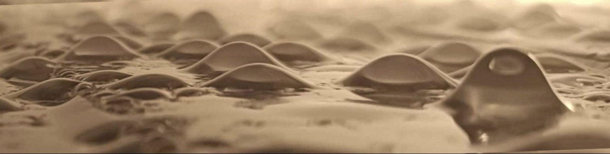
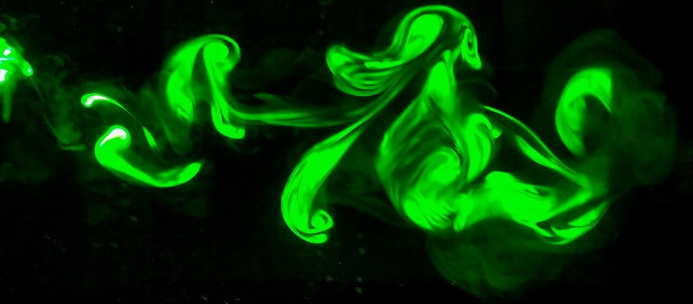
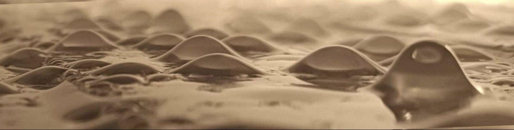
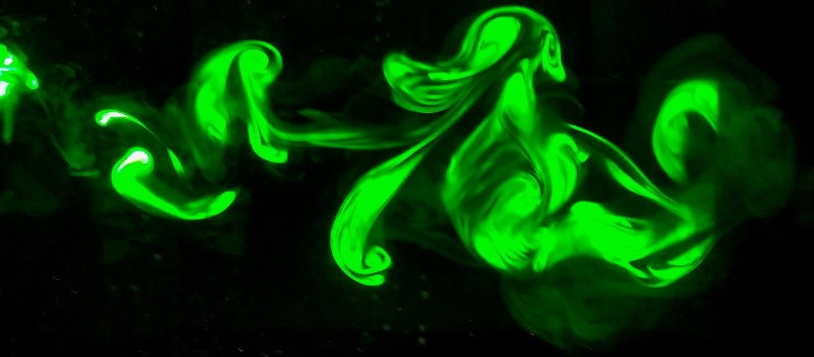

Hi! I'm Pier Giuseppe Ledda
I am a Tenure-track Assistant Professor at the University of Cagliari, Italy. I obtained my PhD degree at the Swiss Federal Institute of Technology in Lausanne (VD), Switzerland.
I am interested in any problem that involves fluid mechanics and its interactions with other disciplines, trying to apply the elegance of mathematics in capturing the essence of complex physical phenomena. My research activity spans from small to large scales, although mostly focused on small scales, and combines theoretical approaches, numerical simulations, and experiments. My goal is to understand the underlying physical mechanisms and the key parameters governing fluid flows to formulate general laws capable of describing their behavior. These results can be applied to the prediction, interpretation, and optimization of fluid dynamics phenomena of both engineering and environmental relevance.
Lastest News
12.2025: Extremely pleased to see our Physical Review Letters paper on soft hydraulics in collaboration with Matteo Pezzulla selected as a Editors' suggestion, serving as Cover for its Issue and covered in Physics Magazine !
12.2025: I will present our recent work on soft hydraulics at Fluids and Complexity IV, Nice (FR) ! .
10.2025: Starting as Tenure-track Assistant Professor at the University of Cagliari, Italy.
09.2025: Heading to Hamburg for HARMO23 , where I will present a work focused on indoor fluid mechanics.
08.2025: I will present my recent work on ophthalmic fluid dynamics in Dublin at EFDC2 !
06.2025: The 16th ERCOFTAC SIG 33 Workshop that we are organizing in Cagliari, Sardinia, is approaching !
06.2025: Happy to give an invited seminar in June at LadHyx, Ecole Polytechnique (France) !
Università degli Studi
di Cagliari (DICAAR),
Sardinia
 PierGiuseppe.Ledda [at] unica [dot] it
PierGiuseppe.Ledda [at] unica [dot] it
 


